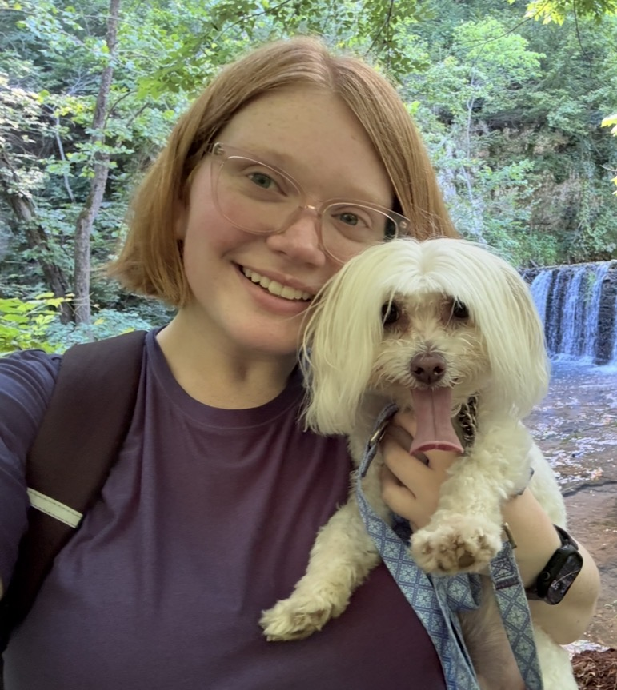

About
I’m Starlee Jiles - a software developer, healthcare technology professional, community leader, and lifelong problem-solver from Broken Arrow, Oklahoma.
My path into technology has been anything but conventional. Before graduating from Atlas School with my diploma in Computer Science in 2025, I worked in retail, delivery services, and the legal field. I was a Walmart cashier during my senior year of high school and throughout the height of the COVID-19 pandemic, became a registered precinct poll worker at 18, and briefly worked as an Instacart shopper before beginning my legal career in 2021.
Over four years in the legal industry, I wore just about every hat available: billing specialist, receptionist, court runner, administrative assistant, paralegal, legal assistant, and - often by default as the office’s only Gen Z employee - tech adviser. I supported work involving insurance defense, motor vehicle and trucking accidents, workplace injuries, workers’ compensation, guardianships, divorce, estate planning, probate, and other areas of civil law. That experience taught me how much thoughtful systems matter. I found myself increasingly drawn to solving technical problems, improving inefficient processes, and building tools that made people’s work easier. Eventually, I took the leap, left my full-time legal position, and returned to school to turn that interest into a career.
Today, I work as an Epic Analyst supporting healthcare software operations while also building practical websites and software for organizations and small businesses. My background across healthcare, law, retail, public service, ministry, and software gives me an unusual perspective: I understand both the technology and the real people who need to use it. I’m naturally curious, highly independent, and happiest when I’m untangling a complicated problem or finding a simpler way to accomplish something meaningful.
Outside of work, community has always been important to me. I have led a young-adults LifeGroup through Life.Church since 2023 and am an ordained minister. Long before that, I was a proud member of the Pride of Broken Arrow, playing trombone and baritone before graduating with the Broken Arrow High School Class of 2020. Those experiences helped shape me into someone who values commitment, leadership, service, and creating spaces where people feel welcome.
And the little guy pictured with me is Teddy, my tiny adventure companion. He’s been part of my life for years and is happiest tagging along for walks, errands, and time outdoors. He’s exceptionally well-behaved, wonderfully particular, and proof that a very small dog can have a very large personality.